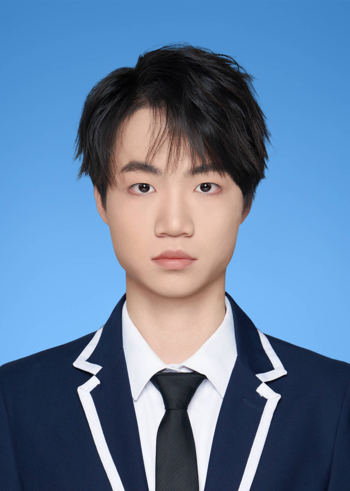

杨 永 豪
Yang Yonghao
院校
武汉大学 · 数学与统计学院
邮箱
2023302061214
@
whu.edu.cn
微信
yyh142857369
主页
github.com/miracleyang-dev

教 育 背 景
武汉大学 数据科学与大数据技术（本科）
2023.09 – 2027.07（预计）
学业情况：
专业绩点 3.92 / 4.0（93.4 / 100） · 专业排名 1 / 63
数学分析
91
高等代数
96
数值线性代数
94
实变函数
94
常微分方程
93
概率论
99
数理统计
97
数值分析
100
数据结构
98
Python
96
机器学习
90
神经网络
98
科 研 经 历
生成模型专题：Score / Flow / Drifting
2026.07 – 至今
沿 NCSN、DDPM、Score-SDE、Flow Matching、Drifting 脉络研读核心论文。
推导相关 SDE / ODE 公式，梳理各类生成过程的数学动机。
面向自然语言处理的神经网络模型比较
2026.02 – 2026.04
基于 N-gram、RNN、LSTM、Transformer 等搭建统一情感分类流程，开展模型对比与消融。
设计 CMLG 多特征融合方案，宏 F1 较基线明显提升。 [
DOI
] [
源码
]
深度学习在空间多组学中的基准评测
2025.10 – 2026.01
在统一 PyTorch 框架下，对比 GNN、VAE、GAN 在单细胞与 bulk 转录组数据上的表现。
探索自监督、对比学习与知识蒸馏在空间多组学跨模态对齐中的应用。
开 源 项 目
machine-learning-handbook
整理深度学习基础与数学预备知识的个人知识库。 [
仓库
]
basic-algorithms
涵盖动态规划、图论、字符串、数论方向的 C++ 算法模板集合。 [
仓库
]
bomb-cat-game
基于 Python + Pygame 的原创卡牌对战游戏。 [
仓库
]
荣 誉 与 奖 项
2026
电工杯（数学建模）
国一等奖
2025
国家奖学金
教育部
2025
甲等学业奖学金
武汉大学
2025
三好学生
武汉大学
2025
蓝桥杯（算法设计）
省一等奖、国三等奖
2025
校级优秀寝室长
武汉大学
技 能 与 语 言
编程语言
Python、C / C++、R
机器学习
PyTorch、NumPy、Pandas、scikit-learn
工具链
Git、LaTeX、Markdown、MkDocs
英语
大学英语四、六级
研 究 兴 趣
借助现代数学工具，训练并分析深度生成模型与推理模型。